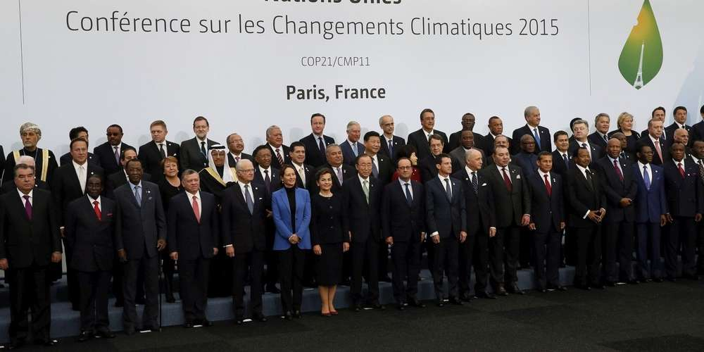

Les états
Les états sont les acteurs les plus important,ils fixent des lois pour limiter la pollution (en France :le métam-sodium va être interdit) et financent des projets respectant le cadre du developpement durable . En se réunissant ils cherchent des solutions pour ne pas endommager plus que nessaire l'environnement (COP 21).
